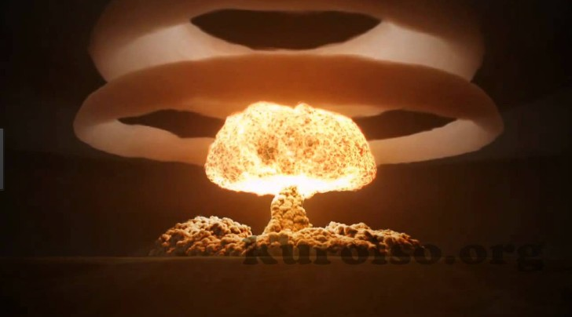

수소는 자연계에 존재하는 원소들 중에 가장 작은 원자들로 구성되어 있는데, 수소 원자 두 개가 결합한 이원자 분자 상태가 안정한 원소 상태이며 분자식은 H2이다. 수소는 주기율표에서 원자 번호가 1인 첫번째 원소이고 원소 기호는 H이다. 수소는 비금속원소로 원자량 1.00794g/mol, 끓는점 -252.87℃, 녹는점 -259.14℃, 밀도 0.08988g/L 이다. 우주에서는 우주 질량의 약 75%, 원자의 개수로는 90%를 수소가 차지하고 있다고 할 만큼 수소가 풍부하며, 우주에서 수소의 대부분은 단원자 상태(H)로 존재한다. 수소는 매우 가벼운 원소여서 지구의 대기권에는 극소량이 존재하고, 지구의 지각권에서는 물 분자나 유기 화합물과 같이 화합물을 이룬 상태로 대부분 존재한다. 지구 표면에서는 산소와 규소에 이어 세 번째로 많은 원소이다. 수소는 연소하더라도 공해 물질을 내뿜지 않아 석탄, 석유를 대체할 무공해 에너지원으로써 중시되고 있다. 하지만 수소는 터질 수 있는 위험 때문에 저장하기 어렵고 운반이 어렵다.
